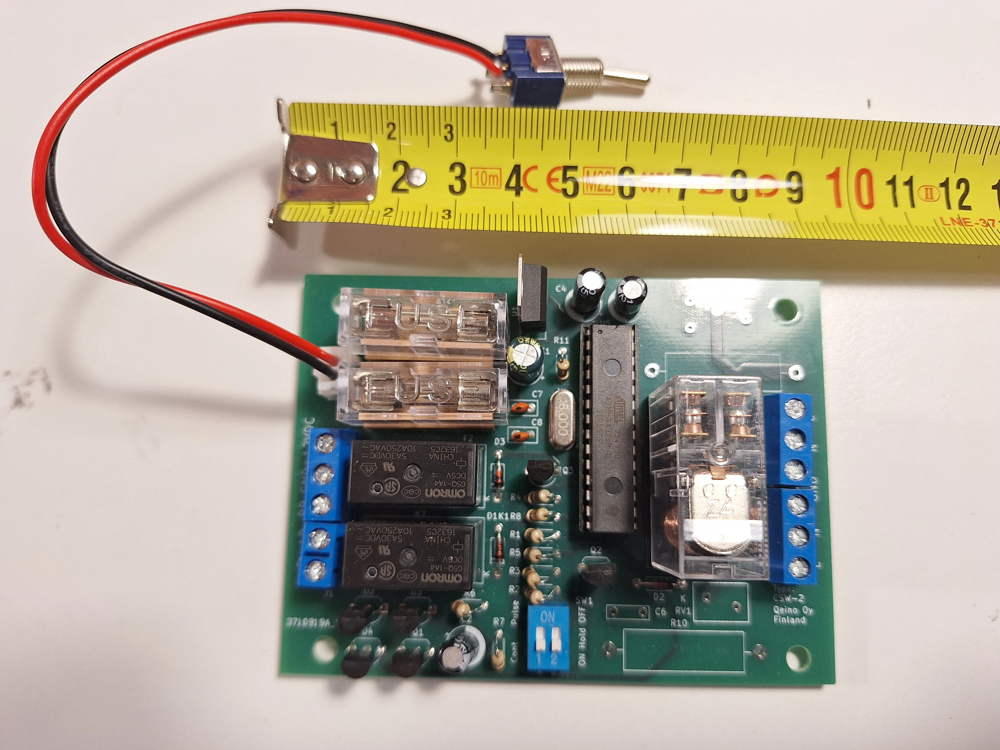

Suurenna kuva
Patentoitu suomalainen keksintö
Perävaunun takavalokytkin
Tehokkaat peruutus- ja työvalot peräkärryyn ilman ylimääräisiä kaapeleita tai kytkimiä vetoautoon. Ohjaus tapahtuu kätevästi ohjaamosta auton omilla vilkuilla!

Suurenna kuva
Malli: TBS-231-L (LED-takavalot)
Miksi tavallinen peräkärry tarvitsee tämän?
Standardissa 7-napaisessa peräkärrypistokkeessa ei ole peruutusvalojohdinta. Pimeällä tai hämärässä peruuttaminen peräkärryn kanssa – erityisesti kapeilla mökkiteillä tai ahtaissa pihoissa – on vaarallista arpapeliä, ja auton omat peruutusvalot peittyvät kärryn taakse.
Qeinon patentoitu ratkaisu: Kytkinyksikkö asennetaan suoraan peräkärryyn. Se tarkkailee 7-napaisen liittimen kautta tulevia suuntavilkkusignaaleja. Kun laitat hätävilkut päälle hetkeksi, kärryn tehokkaat peruutus-/työvalot syttyvät! Kun haluat sammuttaa valot, näytät vain suuntavilkkua oikealle tai vasemmalle. Kuljettajan ei tarvitse nousta autosta tai asentaa uusia kytkimiä ohjaamoon!
Ei kaapelointia ohjaamoon
Valoja ohjataan suoraan auton omalla vilkkuvivulla ja hätävilkkukytkimellä.
Tukee tehokkaita työvaloja
Maks. 5 A (jopa 60W LED-valotehoa). Turvallinen näkyvyys pimeässä.
Roiskevesitiivis kotelo
Suojattu pölyltä ja roiskeilta. Voidaan asentaa aisaan tai kärryn takalaitaan.
Patentoitu toimintaperiaate
Täysin ainutlaatuinen suomalainen logiikka, joka erottaa hätävilkut ja vilkut toisistaan.
Selkeä 6-johdinkytkentä (Vakio 7-napainen perävaunu):
Valkoinen: Maa (GND)
Keltainen: Vasen vilkku
Vihreä: Oikea vilkku
Ruskea: Ajovalo (+12V)
Sininen: Releen kärki 1
Sininen: Releen kärki 2
Tekniset tiedot (TBS-sarja)
- Käyttöjännite 12–16 VDC
- Lepovirta 40 mA
- Maksimi kytkentävirta 5 A (esim. kaksi 27W LED-työvaloa)
- Käyttölämpötila -30 °C ... +85 °C
- Kotelon mitat 125 x 80 x 32 mm
- Käyttöalue Mökkiteillä, pihoissa, työmailla ja tieliikenteen ulkopuolella

Erikoistuote
Webaston ja lisälämmittimien kauko-ohjain CSW-1
Qeinon innovaatioihin kuuluu myös CSW-1 -ohjainyksikkö, joka mahdollistaa auton polttoainekäyttöisen lisälämmittimen (Webasto / Eberspächer) käynnistämisen ja sammuttamisen suoraan auton omalla avaimella ja vilkuilla ilman erillistä kalliitta kaukosäädintä.